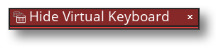

描述
This action can be used to hide the virtual keyboard on the device running the game. Calling this action will generate a System Asynchronous Event, in which the async_load DS map will be populated with the following key/value pairs:
- "event_type" - this will be "virtual keyboard status" when triggered by virtual keyboard actions.
- "screen_height" - 虚拟键盘的高度（以像素为单位）。 如果键盘不可见，则该值为 0。
- "keyboard_status" - 键盘的当前状态，作为以下字符串之一返回：
- "hiding"
- "hidden"
- "showing"
- "visible"
动作语法：

举例：

上述动作块检测鼠标点击动作，如果鼠标点击，就检测虚拟键盘是否正在显示。如果未显示，就显示-使用数字类型键盘。如果已经显示了，就隐藏。